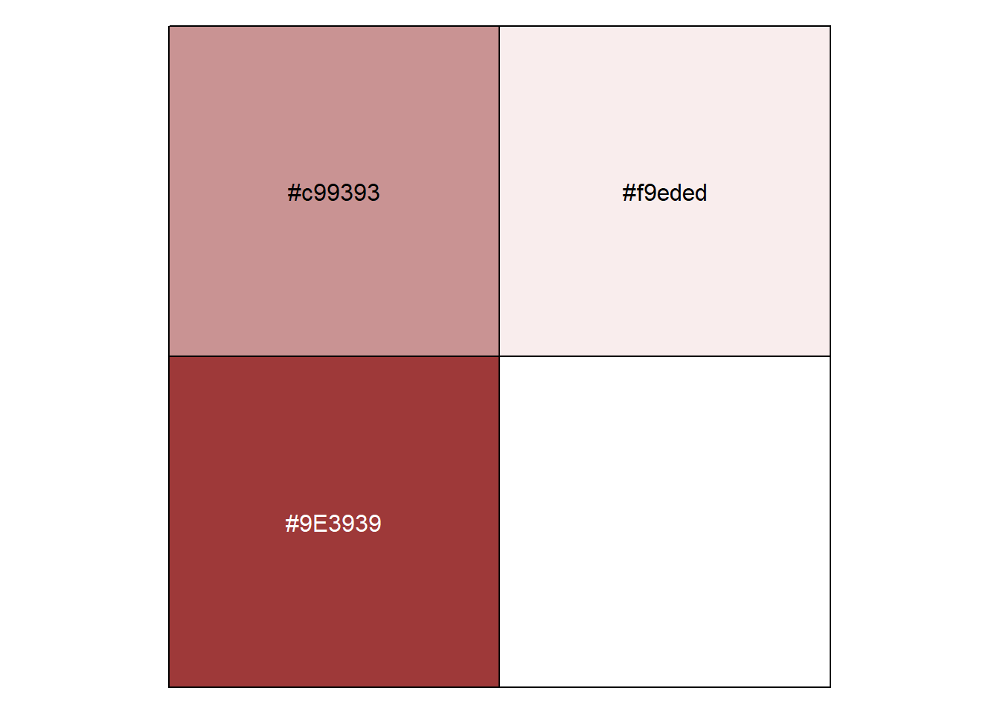

Look and Feel
Fonts
Current fonts are Lato for headings and Open Sans for body text.
Colours
The colour palette looks like this:

Customization in quarto sites
1. Introduction to Static Sites & Quarto:
Static Site: Unlike dynamic websites that generate content on-the-fly (like websites with databases or user profiles), a static site has fixed content that doesn’t change unless you manually update the source files.
Quarto: This is a static site generator. It takes content you’ve written, typically in Markdown or a similar format, and generates a complete, static website. It’s like a tool that converts your content into a website format.
2. Bootstrap:
Bootstrap is a free and open-source CSS framework that’s directed at responsive, mobile-first front-end web development. It contains CSS- and JavaScript-based design templates for typography, forms, buttons, navigation, and other interface components.
How it changes the site look: Bootstrap provides a consistent base for styling. If you’re using a Bootstrap template, your website will be mobile-responsive, meaning it’ll look good on phones, tablets, and computers. It offers built-in design patterns which can be easily customized to match your site’s aesthetic.
3. Fonts:
Fonts define the look and feel of the written text on your website.
How it changes the site look: Imagine reading a formal document in a ‘Comic Sans’ font. It wouldn’t feel right, would it? The choice of font sets the mood and tone of the content. Some fonts are professional, others playful, and others artistic. By choosing a particular font, you’re setting the tone for how readers perceive your content.
4. Customizing CSS:
CSS (Cascading Style Sheets) is the language we use to style a website.
How it changes the site look: Think of your website as a house. If HTML is the foundation and structure of the house, then CSS is the paint, decor, and furniture. By changing the CSS, you can modify everything from colors, spacing, layout structures, to animations. It’s the tool that turns a basic structure into a beautifully designed space.
5. Colours:
These are the specific shades and hues you use on your website.
How it changes the site look: Colors evoke emotions. A site with a dark, moody color scheme gives a different vibe than one with bright, vibrant colors. Choosing colors is not just about aesthetics but also about the feelings and emotions you want your site to evoke.
6. Logo:
This is often a symbol or design that represents your brand or site.
How it changes the site look: A logo is a focal point. It’s often the first thing people notice, and it sets the tone for the entire brand. A well-designed logo can make your site look professional and trustworthy.
7. Hero Image:
This is a large banner image, prominently placed on a web page, usually at the front and center.
How it changes the site look: The hero image acts as the visual introduction to your content. It can be a powerful tool to grab attention, convey the purpose of the site quickly, and drive users to take action (like reading more or signing up).